Esra van den Berg
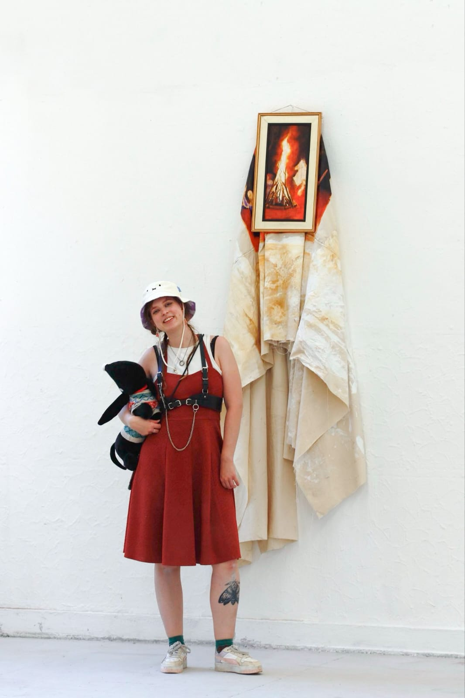
My art arises from the acts of painting, sculpture, world-building, and the conscious combining of collected found objects. I mainly work intuitively and start out from a material or a simple subject, like a skull or campfire. As I work, my art starts to create their own mythology. This means that my work inspires me to write stories about them. This is often where the title comes from. Archaeology, anatomy, the surrealistic, and the fantastical inspire me a lot, and through me my work and my worlds.
Lately, I’ve been noticing how many of my fascinations in life are all linked to that what sets us as human beings apart from other animals. I have been seeing this in my work as well. And so, my research has started on the beauty of the human that just is. To see and admire this through the eyes of an outsider. (June 2025)
Email: esravandenberg2k@gmail.com
Instagram: @astra2k
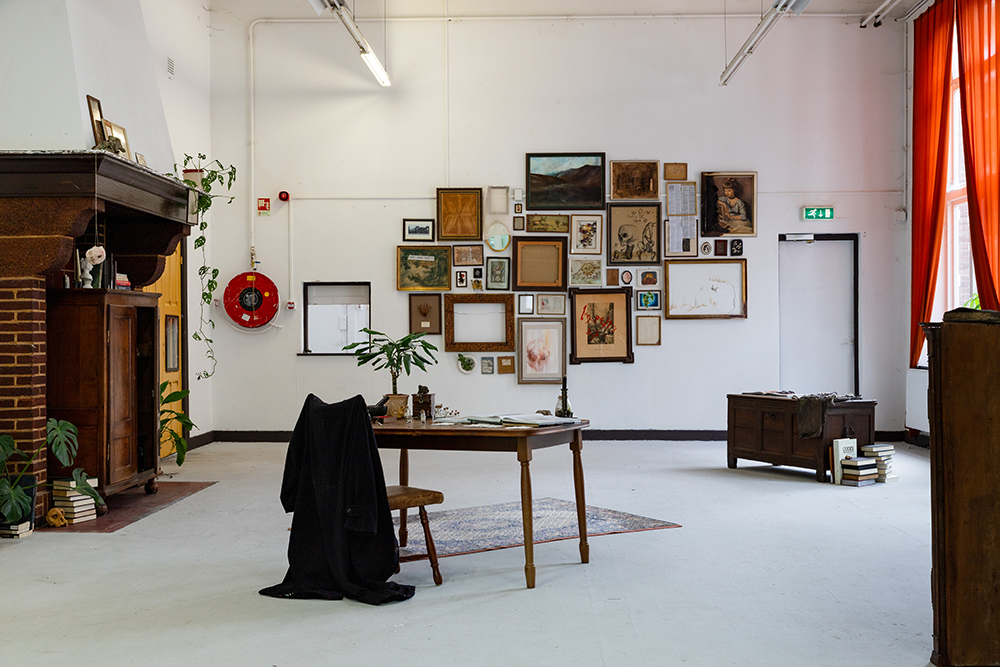
Graduation Show
Pak Me Dan 2025
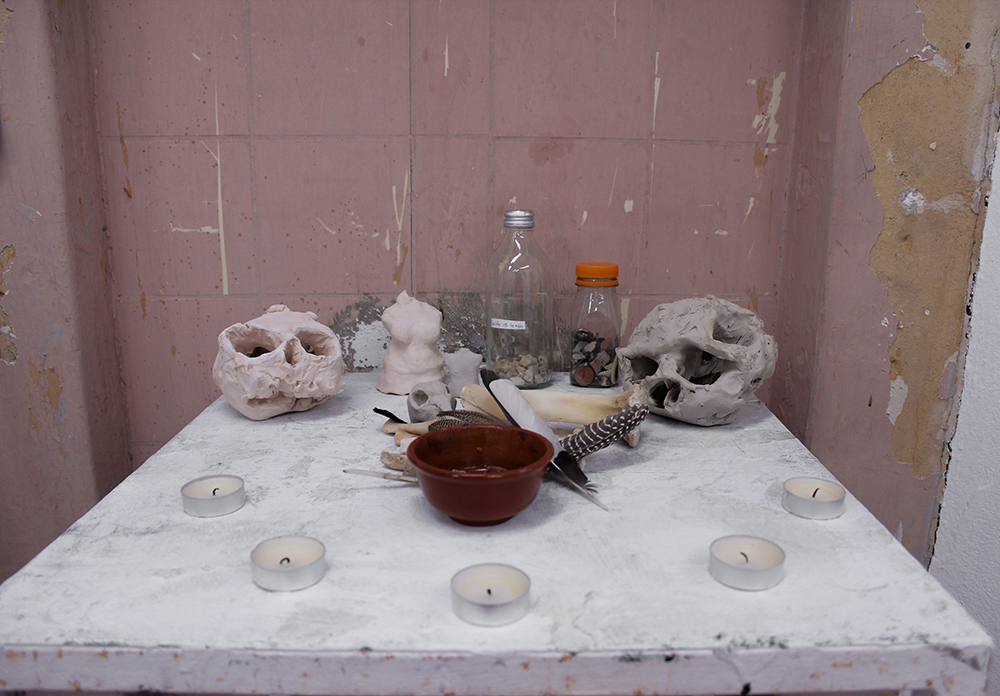
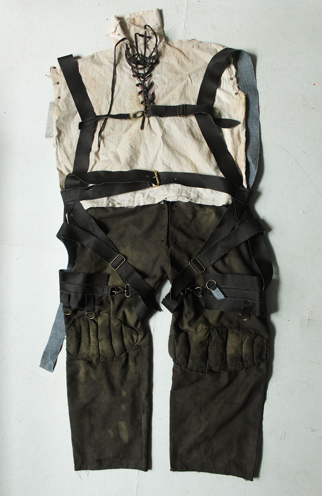
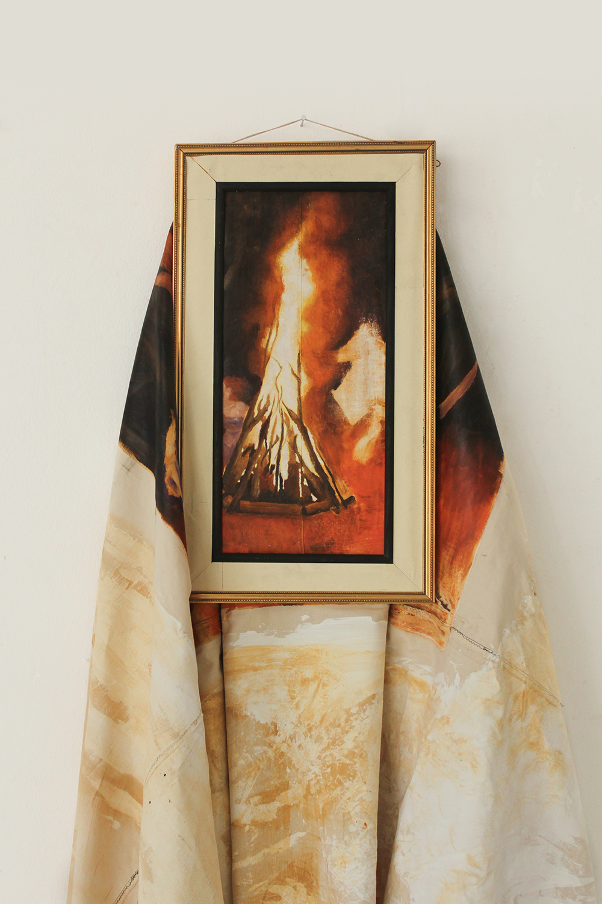
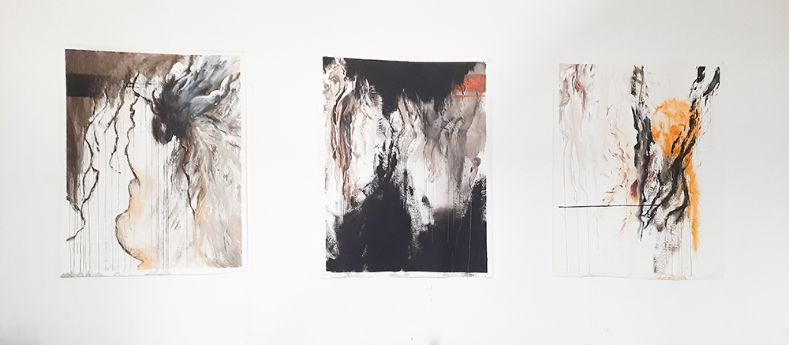
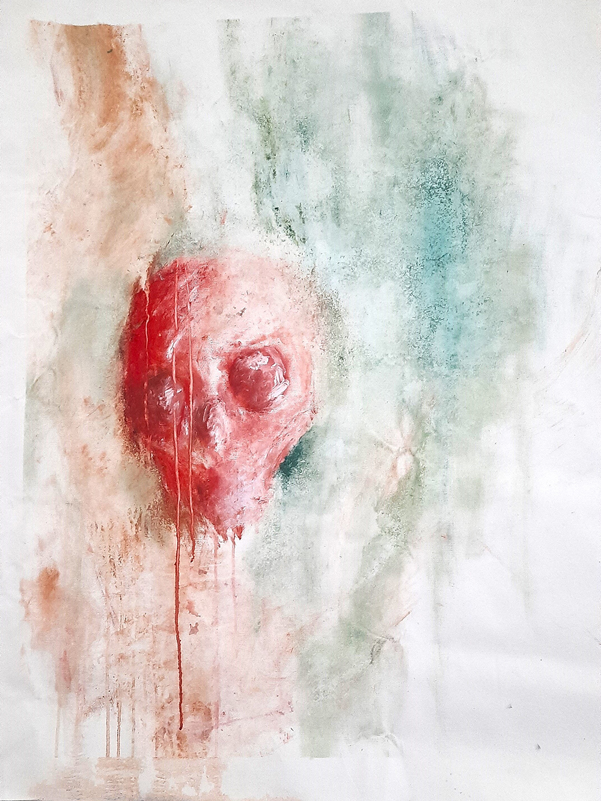

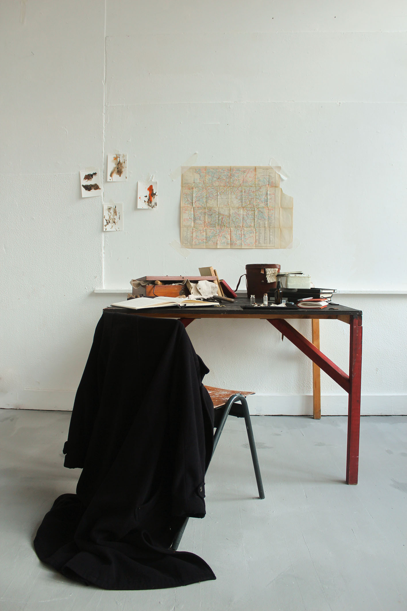
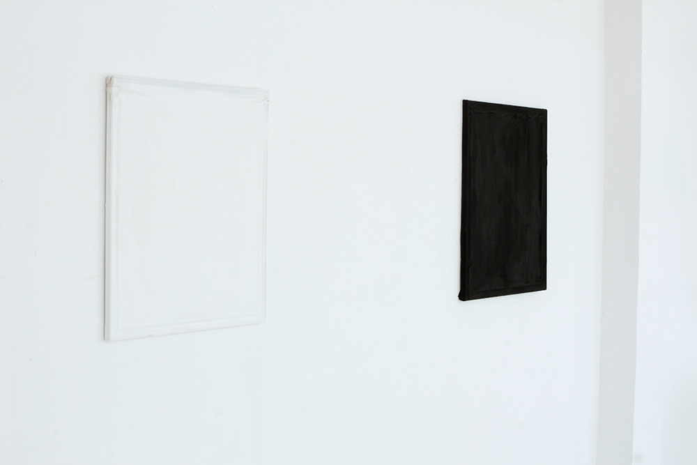
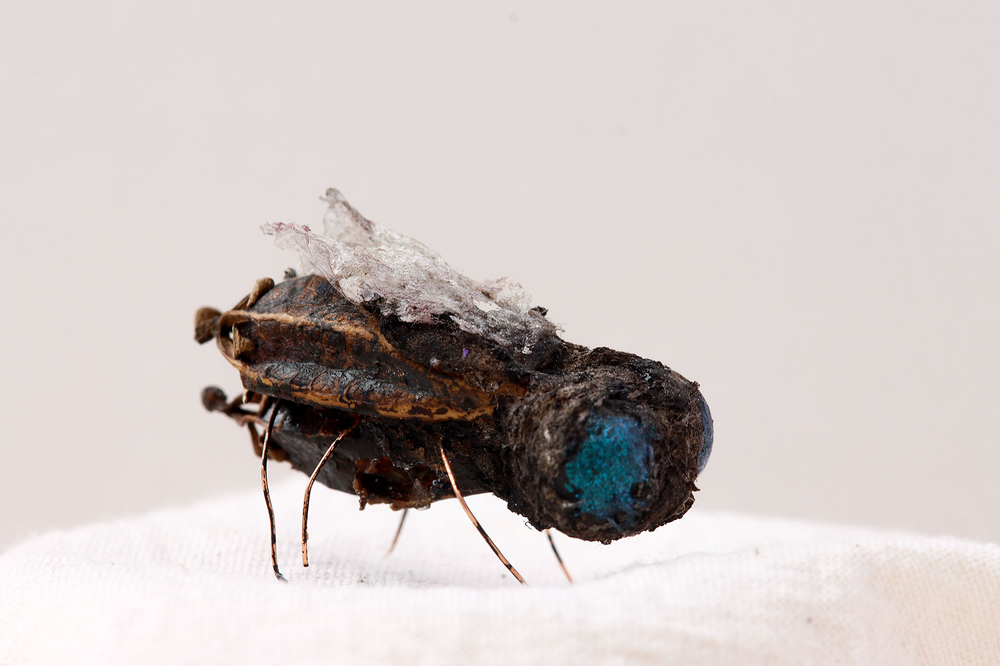
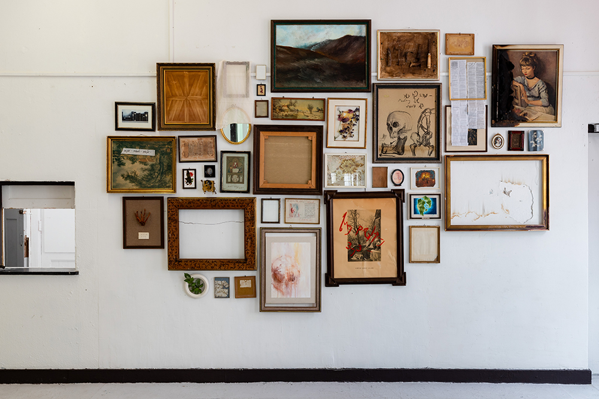